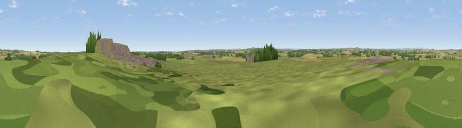

Berwick Hill
#38848 in England · top 86% of its area beats it · near PontelandWhere it is
The exact computed spot (NZ 17390 75489). Click the marker for map links.
The view, rendered

A 360° render of this exact spot computed from the terrain model, tree cover and land cover — summer colours, afternoon light, calibrated against photographs of famous viewpoints. Real trees, hedges and buildings will differ in detail.
The panorama
Grey silhouette: terrain skyline in each direction (720 bearings, Earth curvature and refraction included). Dashed green: skyline with trees (+15 m) and buildings (+8 m) as obstacles. Blue strip: how far the ground is visible on each bearing.
Where the view opens
Wedge length = distance to the farthest visible ground on that bearing (vegetation-aware). Rings at 10, 25 and 50 km.
What fills the view
70% grassland · 18% cropland · 7% woodland · 5% built-up
Angular shares of the visible panorama (visual magnitude), not map area. Landscape diversity 0.39 (0–1 Shannon).
Key numbers
More beautiful places nearby
The staircase of upgrades: each row has a higher view potential than everything closer. Driving times are estimates from straight-line distance, calibrated against real road routing — check an actual route before setting out.
| Place | Direction | Drive | Score |
|---|---|---|---|
| Kirk Hill | WSW · 0 km | ~1 min | 42.1 |
| Viewpoint near Stannington | ENE · 4 km | ~8 min | 53.2 |
| Northumberlandia viewpoint | ENE · 7 km | ~14 min | 68.7 |
| Viewpoint near Greenside | SSW · 15 km | ~27 min | 74.2 |
| Viewpoint near Burnopfield | S · 18 km | ~31 min | 75.4 |
| Viewpoint near Sunniside | SSE · 18 km | ~31 min | 77.6 |
| Pontop Pike | S · 23 km | ~38 min | 77.8 |
| Viewpoint near Rothbury | NNW · 26 km | ~42 min | 81.1 |
55.07356, -1.72920 · source: osm peak · position refined by local search. Computed location — check access rights before visiting.